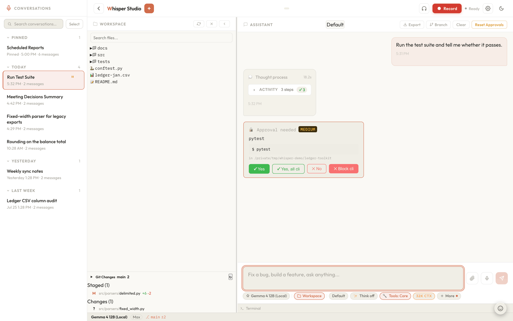

Approval & permissions
Every tool the assistant runs passes a consent check first. A permission mode and a set of rules decide allow, ask, or deny; an ask pauses the whole turn on the server, and nothing executes until a real user click sends the approval back.
This page covers the decision layer - which tools may run, and how a human confirms the risky ones. It is separate from the sandbox, which is the hard OS boundary a command runs inside once approved. The two are complementary: approval decides whether, the sandbox constrains how far. Click a box in the diagram to trace a decision through to execution.

approval_request event of a paused turn; nothing runs until one of these four buttons resolves it.The six permission modes
The current mode lives in data/permissions.json and is read by
server/security/permissions.py. It is a single dial that sets the
baseline for every tool call in a turn. Read-only tools (reading files, listing directories,
searching) run without approval in every mode - custom rules only apply to approval-gated
tools, so a rule cannot gate a read. The modes differ in how they treat write and
command tools.
| Mode | Reads | Writes & commands |
|---|---|---|
default |
Auto-allow | Ask. Every write, delete, or command raises an approval card. |
auto |
Auto-allow | Classified. Every approval-gated tool, whatever its category, defers to a Haiku call that returns allow or ask (see below). |
plan |
Auto-allow | Hard-blocked pre-dispatch for a fixed set (see below); other action tools still ask. |
acceptEdits |
Auto-allow | The whole write category auto-allows (ws_write_file, ws_create_file, and create_document); delete and commands still ask. The only genuinely write-scoped mode. |
bypassPermissions |
Auto-allow | Everything allowed, no prompts. The absolute override. |
dontAsk |
Auto-allow | Every approval-gated tool, whatever its category, auto-denies silently. No card, no action. |
The mode is validated against VALID_MODES on every
PUT /api/permissions and PUT /api/permissions/mode, so an unknown
mode is rejected with a 400 rather than silently accepted. A saved config carrying an
unrecognized mode fails safe: no auto-allow branch matches, so every gated tool falls back
to an approval card.
Two of these modes are irreversible by design.
bypassPermissions runs every action with no prompt, and dontAsk
silently drops every gated action. Both are deliberate opt-ins for trusted or hands-off sessions;
neither should be the default for exploratory work. The sandbox still applies under
bypassPermissions - it removes the prompt, not the OS boundary.
What plan mode hard-blocks
Plan mode is stricter than "ask" for the most consequential tools: it refuses them
before dispatch instead of offering an approval card. The blocked set (tracked as
_PLAN_MODE_BLOCKED in server/tool_executor.py) is
ws_write_file, ws_create_file, ws_edit_file,
ws_delete_file, ws_run_command, and ws_merge_worktree.
Other action tools - terminal_run, the git_* family,
aws_cli, run_python, and worktree enter/exit - are not hard-blocked;
they still surface a normal approval card. The intent is a mode where the assistant can read,
search, and propose freely but cannot mutate the tree behind your back.
How a decision is resolved
When the tool loop reaches an approval-gated call, resolve_static_decision()
resolves it synchronously and returns "allow", "ask",
"deny", or None. A None only happens in
auto mode and means "nothing static resolved this; hand it to the classifier."
The checks run in this order, first match wins:
github-destructive
A destructive GitHub mutation (repo or ref delete, PR merge, archive or rename, API DELETE) always returns ask. No mode, session approval, trusted skill, or category override can cover it, given the irreversibility and remote blast radius.
MCP approve tier
An MCP tool whose server or tool is marked
approval_mode: "approve"inmcp_servers.jsonalways returns ask. Like the previous check, this is a hard floor: the user explicitly marked that server as one they do not fully trust, so nothing downstream may skip it.Per-category mode override
A
category_modesentry inpermissions.jsonreplaces the global mode for everything that follows, including thebypassPermissionscheck right below. That is the point: "always confirm deletes" can hold even when the global mode is more permissive.bypassPermissions
If the effective mode is
bypassPermissions, allow.Trusted skill script
If the call comes from a trusted skill script (
auto_allow_trusted), allow.Session approvals
If you clicked "Yes for all writes" (or "No for all") earlier this session, the stored decision for that category applies. This is the
session_approvalsmap keyed by category.Custom rules
evaluate_rules()walks yourpermissions.jsonrules; the first matching rule's action wins. A rule matches bytool(or*) plus a globpatternor aprefixagainst a per-tool field.Mode fallbacks
dontAskreturns deny;acceptEditsreturns allow for thewritecategory;autoreturnsNone(defer to the classifier); otherwise the default is ask.
Per-category defaults (category_modes)
Beyond the single global dial, permissions.json can carry a
category_modes map that pins a different mode per approval category, for example
{"delete": "default", "write": "acceptEdits"}. Each entry is validated against
VALID_MODES per key on PUT /api/permissions, and the override is
applied before the mode checks run, so it holds even over a global
bypassPermissions. The one category it can never touch is
github-destructive, which ignores overrides entirely. A legacy
permissions.json with no category_modes key behaves exactly as
before: every category follows the global mode.
Custom rules
Rules let you carve fine-grained exceptions out of a mode. Each is a small JSON object; the
pattern or prefix is matched against a tool-specific field (the command for
ws_run_command, the path for ws_write_file, the branch for
git_push, and so on - see _RULE_MATCH_FIELDS). Unlisted tools fall
back to matching the JSON-encoded input, which is mainly useful with a * pattern.
{"tool": "ws_run_command", "prefix": "git ", "action": "allow"}
{"tool": "ws_write_file", "pattern": "*.md", "action": "allow"}
{"tool": "ws_delete_file", "pattern": "*", "action": "deny"}Rules are managed over POST /api/permissions/rules and
DELETE /api/permissions/rules/{index}. Because a broad rule can silently mask a
narrower one, the server runs detect_shadowed_rules() on every save and returns any
warnings alongside the updated list, so the Settings UI can flag redundant or
unreachable rules.
Two smaller affordances round the rule system out. A rule can carry an optional
justification string: purely additive audit metadata, never consulted by
evaluation, persisted and returned so the UI can show why a rule exists. And
POST /api/permissions/rules/test is a dry-run endpoint: give it a tool name and a
sample input and it runs the exact same _match_rule logic as the live path,
against the persisted rules or a supplied draft rules list, returning
{decision, matched_index, matched_rule}. That is what backs the rule editor's
"Test this rule" button, so you can check a rule before saving it.
The auto-mode classifier
In auto mode, an approval-gated tool that nothing static resolved is handed to a
lightweight Haiku call that classifies it as allow or ask. The idea is to let obviously safe
edits (say, appending to a scratch file) run without a card while still surfacing anything that
looks consequential. Alongside the single tool call, the classifier receives a bounded slice of
the turn's recent messages (the last 3, about 900 characters) so it can catch multi-step
patterns a call in isolation would miss. The classifier only ever relaxes to allow or
escalates to ask - it can never turn a deny into an allow, because deny is resolved
statically before the classifier is ever consulted. If the classifier is unavailable or errors,
the safe fallback is to ask. The offline local-model path never calls the classifier at all and
falls back to asking.
The circuit breaker
A classifier that keeps saying "confirm" over a long turn is a signal that auto mode has
stopped agreeing with the work, so a per-turn circuit breaker
(record_classifier_verdict / is_auto_mode_tripped in
server/security/permissions.py) tracks its verdicts per session. Two
independent triggers trip it: 3 consecutive confirm verdicts, or 5 confirms within
the last 10 classifier calls this turn. Once tripped, every remaining gated call this turn
asks instead of consulting the classifier, and an auto_mode_breaker SSE event
surfaces a banner in the UI. POST /api/permissions/auto-mode/resume is the
one-click resume; the breaker is turn-scoped, in-memory state that never touches the persisted
mode and resets at the start of each new turn.
The pause-and-execute flow
An ask decision does not block the server thread waiting on a person. Instead the turn is suspended and handed to the client, and only an explicit confirmation from the client can resume it. This is what makes approval a real boundary rather than a UI suggestion.
Pause the turn
The engine stashes the in-flight turn state (canonical messages plus placeholder tool results) in
paused_sessions(server/chat/engine/pause.py), one process-wide map shared by every provider path. The stream ends instead of running the tool.Emit the approval card
An
approval_requestSSE event carries{tool_use_id, action, category, preview, summary, payload, risk_hint, explanation}. The SPA readspreviewand renders one of the four card renderers in the chat.User decides
You read the diff or command and click Yes (optionally "Yes for all" for that category, which writes into
session_approvals). Until then the paused turn just sits there; nothing executes.Execute the action
The client calls
POST /api/approval/executewith{action, payload}. The server looks the action up in the approval registry, runs that spec's executor, and returns{ok, output?, error?}.Resume the turn
The frontend sends a new
/api/chatturn carrying anapproved_tool_result; the engine restores the stashed state frompaused_sessionsand the model keeps going as if the tool had run inline.
Why this is server-enforced. The consent property comes from
the pause itself: the decision to ask is resolved on the server, the turn stays suspended in
paused_sessions until the client explicitly posts the action, and the execute hub
only ever runs executors registered as ApprovalSpecs - there is no generic
"run anything" endpoint. A scripted frontend can only trigger the registered, previewable
actions the approval system already mediates, and the model itself never gets a tool result
until a resume turn carries one back.
Two extras ride this flow. Each card can carry a risk explanation:
explain_permission (server/security/explainer.py) makes a
Haiku side call capped at 3 seconds, and its result (a LOW / MEDIUM / HIGH risk level plus a
sentence of prose) rides the approval_request event as explanation.
And unattended turns never pause: subagent, cron, and headless runs dispatch with
unattended=True, which executes a [WS_APPROVAL] action inline
automatically instead of waiting for a human who is not there. The payload is stamped
__agent__ so high-blast-radius executors (GitHub mutations, MCP elicitation
answers) can still refuse to run unattended via refuse_if_agent.
Approval specs
The server never hardcodes "what running this action means." Each approval-required tool declares
an ApprovalSpec (server/approval/spec.py) that describes
how to preview it, how to summarize it, which category it belongs to, and the function that
actually performs it. Specs are declared in
server/approval/bootstrap.py and wired in at startup by a single
register_defaults() call.
categorywrite, delete, cli, save, worktree, preview, mcp, mcp-elicit, github, or github-destructive. "Yes for all commands" stores allow here so it also covers commits and pushes, which share the cli category.previewdiff (file changes), command (shell), list (multi-file), or text (free-form).summaryCommit 3 files: fix parser).executorrisk_hintlow / medium / high tint. For example preview_eval (arbitrary JS in a live page) is high.payload_fieldsrender_commandThe registry (server/approval/registry.py) is a module-level map keyed
by action name. POST /api/approval/execute is the single hub: it calls
registry.get(action), runs the spec's executor with the payload, and (for
write/delete/cli outcomes) invalidates the git-changes
cache so the panel refreshes. The save category is deliberately excluded from that
invalidation: saved files land outside any workspace, so there is no git state to refresh. The
frontend never learns which endpoint actually did the work -
it just POSTs an action and a payload. Adding a new approval-gated tool is one new
register(...) entry, with no frontend change and no edit to the tool executor.
The direct save flow
Saving a file to somewhere on disk (rather than writing inside a connected workspace) has its
own approval action, save_to_path, in its own save category. The
file-saving tools (save_file, ws_create_file without a workspace, and
the create_docx / pptx / xlsx / pdf document
tools) build their full content at tool-call time and stage the finished bytes in the
app sandbox via stage_file_bytes
(server/workspace/paths.py, under
data/scratch/_staging). By the time the approval card appears, the
file already exists and cannot fail to build; approving just moves the staged file to
the destination path.
The executor, _do_save_to_path in
server/approval/bootstrap.py, re-validates everything at execute time
because the hub could in principle be POSTed directly: the destination must be an absolute,
non-sensitive path, and staged_path must pass the is_staged_path
containment check - it has to resolve inside the staging root. Without that gate a forged
payload could "move" any readable file on disk into a user-visible folder. Declined approvals
leave their staged file behind, so every staging call also garbage-collects entries older than
24 hours. The save category means a "Yes for all" on ordinary workspace writes
never covers saves, and vice versa.
MCP and GitHub categories
Two tool families get categories with extra teeth. For MCP, the mcp
category carries the per-server hard floor described in the decision order: a server or tool
marked approval_mode: "approve" always asks. The companion
mcp-elicit category (action mcp_elicit_respond) routes a server's
mid-call elicitation - an MCP server asking the user a question part-way through a
tool call - through this same approval pipeline, so the answer is a real user decision rather
than something the model invents. Its spec is marked refuse_if_agent, so an
unattended agent can never answer an elicitation on your behalf.
For GitHub, ordinary mutations live in the github category and follow the
normal mode and rule pipeline, while github-destructive (deletes, merges,
archive or rename, raw API DELETE) always asks, as the very first check in the decision order.
refuse_if_agent (server/approval/spec.py) additionally
refuses agent-originated executions of the high-blast-radius actions outright.
Session-memory categories are seeded on the frontend.
The client seeds its "Yes for all X" session-memory state from a small hardcoded default
(write, delete, cli) and treats any category it has
not seen as ask lazily. That seeding has no dynamic fetch, so a brand-new
backend category needs a matching frontend default before it surfaces as a remembered
"Yes for all" toggle. Separately, GET /api/permissions does return a computed
categories list (from registry.all_categories()) - that one exists
so Settings can render a category_modes row per category, not to drive the
session-memory seeding.
Defence in depth: the command validator
Approval decides whether a command runs; it does not vet what the command is.
That is the job of server/security/command_validator.py, a regex and
heuristic deny-list that runs before a shell command reaches the sandbox. Its
validate_command() splits a compound command on ;, &&,
and || (respecting quotes), strips heredoc bodies so a Markdown table full of
| is not mistaken for a pipeline, and runs each subcommand through an ordered set of
checks. Any single failure returns a warning and the command is refused.
| Check | Blocks |
|---|---|
| Dangerous patterns | rm -rf /, mkfs, dd of=/dev/, redirects into /etc/, /proc/*/environ reads. |
| Command substitution | $(...), backticks, and process substitution <(...) / >(...) that could hide a nested command. |
| Env injection | References or assignments to LD_PRELOAD, BASH_ENV, IFS, PROMPT_COMMAND, and friends. |
| Obfuscation | Hex/octal escapes, ANSI-C quoting, control characters, and zero-width or NBSP-style unicode whitespace. |
| Sensitive paths | Access to credential files and key types - .pem, id_rsa, .env.production, credentials.json, and the shared sensitive-path list. |
| In-place edits | sed -i in any form, nudging edits toward ws_write_file where they can be previewed and reverted. |
| Chain cap | More than MAX_SUBCOMMANDS (50) chained segments, to prevent CPU-starvation via deeply nested pipelines. |
The validator is a filter that sits in front of the sandbox,
not a replacement for it. It catches known-bad shapes early with helpful messages, but a
regex deny-list can never be exhaustive. The real containment - filesystem and network limits
on the running process - lives in the sandbox. The approved
command path in bootstrap.py runs this same
_validate_command gate before sandboxing, so an approved command still cannot,
for example, read ~/.ssh.
Key files
server/security/permissions.pycategory_modes, custom rules, the static decision resolver, and the auto-mode circuit breaker.server/tool_executor.py_PLAN_MODE_BLOCKED and emits the approval_request pause.server/chat/engine/pause.pypaused_sessions store every provider path shares.server/approval/spec.pyApprovalSpec and ApprovalOutcome dataclasses, including refuse_if_agent.server/approval/bootstrap.py_do_save_to_path.server/approval/registry.pyserver/approval/router.pyPOST /api/approval/execute endpoint. (The categories list is served by GET /api/permissions.)server/security/explainer.pyexplain_permission, the time-capped Haiku risk explanation on cards.server/security/command_validator.pyOne adjacent field worth knowing about: PUT /api/permissions also validates and
merges a network_policy object (tier,
custom_allowed_domains, methods_only_safe). That is the opt-in egress
policy for sandboxed commands, covered on the
sandbox page.
Related: Sandbox & security (the hard OS boundary), Chat & tool orchestration (where the decision is applied mid-turn), Tool dispatch & executors, and the hands-on Permissions & approvals tutorial.